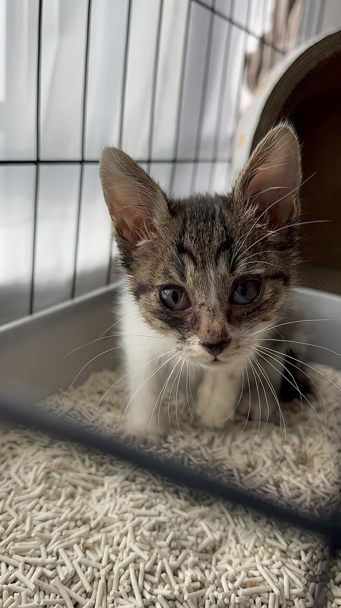

Create a 10 second photorealistic disaster-movie shot, vertical 9:16.
IMAGE 1: Preserve the kitten's exact face, tabby markings, white chest and paws, ear shape and eye colour. Do not change its identity.
The kitten is now skyscraper-sized in downtown Los Angeles. Low street-level angle: it peers between glass towers and paws at a window while police cars and a crowd film it on their phones. Cut to an aerial drone shot as it steps across the rooftops. Bright daylight, drifting dust, handheld news-camera feel.
